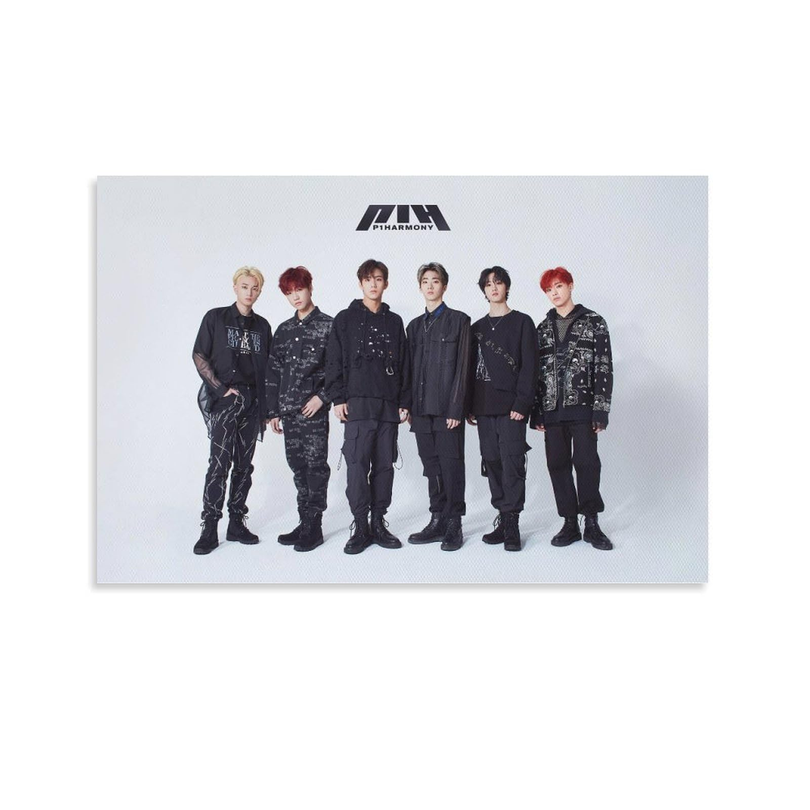

P1Harmony Achieves Career-Best: "UNIQUE" Surpasses 500,000 First-Week Sales

P1Harmony has officially entered a new chapter in their career. The six-member boy group from FNC Entertainment has achieved their highest first-week sales ever with their ninth mini album "UNIQUE," surpassing the 500,000-copy milestone and securing their second music show trophy—all within ten days of release.
Released on March 12, 2026, "UNIQUE" represents a significant evolution for the group, who have steadily built their fanbase since debuting in October 2020. The album's success comes after a 10-month gap since their previous release, during which members focused on individual activities and creative preparation.
Breaking the Half-Million Mark
According to Hanteo Chart data, "UNIQUE" sold approximately 507,000 copies during its first week, making it the highest first-week seller in P1Harmony's career by a considerable margin. Their previous record was held by their eighth mini album, which achieved approximately 340,000 first-week sales in 2025.
FNC Entertainment announced the milestone in a statement: "We are thrilled to announce that P1Harmony's 'UNIQUE' has exceeded 500,000 copies in first-week sales. This achievement reflects the incredible growth of P1ECES [P1Harmony's fandom name] worldwide and the artistic development of our artists. We extend our deepest gratitude to fans everywhere."
The 50% increase in sales compared to their previous release indicates not just maintained momentum, but genuine growth in the group's commercial appeal—a feat that has become increasingly difficult in the competitive K-pop market.
Music Show Victories Mark Promotional Success
The commercial success of "UNIQUE" has translated into promotional achievements as well. P1Harmony secured their second music show win on the March 20 episode of KBS's "Music Bank," following their first win earlier in the week on MBC M's "Show Champion."
The victories are particularly meaningful for a group from a mid-sized agency competing against acts from K-pop's major labels. During their "Music Bank" acceptance speech, member Keeho expressed the group's gratitude: "We've been working towards this moment for so long. P1ECES, you made this happen. Every stream, every purchase, every supportive message—it all adds up. Thank you for believing in us."
The group's powerful performances of the title track "UNIQUE" have garnered significant attention, with clips going viral across social media platforms. The choreography, which blends precise group formations with showcase moments for each member, has been praised for its complexity and execution.
Album Analysis: A Western-Influenced Evolution
"UNIQUE" marks a notable shift in P1Harmony's sound, embracing a more Western-influenced production style while maintaining the group's signature energy. The seven-track album explores themes of individuality and self-acceptance, reflecting the members' personal growth over their five years in the industry.
The title track "UNIQUE" features a driving bass line, brass elements, and a hook-heavy structure that has proven immediately catchy. Critics have noted the song's accessibility, suggesting it represents P1Harmony's most radio-friendly release to date.
"International fans in particular connected with this album," noted K-pop critic Lee Min-ji. "The production choices feel very deliberate—they're positioning themselves for broader Western market appeal without abandoning the high-energy performances that define them."
Other standout tracks include "L.O.Y.L." (Living Our Youth Loudly), which received its own music video on March 18, and "Crazy," a fan-favorite that showcases the group's rap line. The album also includes "Still With You," a slower track that highlights the group's vocal capabilities.
International Fanbase Drives Growth
A significant factor in "UNIQUE's" success has been P1Harmony's strong international following. The group has cultivated a dedicated fanbase in the Americas, Europe, and Southeast Asia through consistent English-language content, active social media engagement, and multiple overseas tours.
Their 2025 world tour, which included stops in North America, Europe, and Latin America, helped solidify connections with international P1ECES. The tour's success demonstrated that the group's appeal extends far beyond Korea's borders.
"P1Harmony represents a new generation of K-pop groups that are essentially global from inception," observed industry analyst Park Sung-hoon. "Their content strategy, their member dynamics, their sound—everything is designed for international consumption while remaining authentically K-pop."
Keeho, the group's main vocalist and a Canadian native, has been particularly instrumental in connecting with Western fans. His fluent English and relatability have made him a bridge between the group and English-speaking audiences.
Member Contributions and Creative Growth
"UNIQUE" features significant creative contributions from P1Harmony members, reflecting the group's evolution from performers to artists with agency over their output. Members participated in writing, composing, and conceptualizing the album alongside the production team.
Jiung and Intak, in particular, received songwriting credits on multiple tracks, continuing their development as composers. The self-composed songs have been warmly received by fans, who appreciate the personal touch these contributions bring to the album.
"When we write our own songs, we can express exactly what we want to say," Jiung explained in a recent interview. "This album is really about telling people that it's okay to be different. That's a message we believe in deeply, and writing it ourselves makes it more authentic."
What This Means for P1Harmony's Future
The success of "UNIQUE" positions P1Harmony for their most significant year yet. With contract renewal discussions potentially on the horizon—the group is approaching their fifth anniversary—strong commercial performance strengthens both the members' and agency's positions.
FNC Entertainment has indicated plans for an expanded world tour in 2026, building on the domestic success of the comeback. Dates are expected to be announced in the coming weeks, with fans already speculating about which cities might be included.
The group's trajectory offers an encouraging case study for mid-tier K-pop acts. In an industry often dominated by the "Big 4" entertainment companies, P1Harmony's growth demonstrates that consistent quality, authentic fan engagement, and strategic international positioning can yield significant results.
Fan Celebrations and Online Response
P1ECES worldwide have celebrated the album's achievements enthusiastically. Social media has been flooded with congratulatory messages, fan art, and streaming party coordination as fans work to maintain the comeback's momentum.
"I've been with P1Harmony since predebut," shared one long-time fan on X. "Watching them grow from rookies to half-million sellers is surreal. They've worked so hard, and they deserve every bit of this success."
The group's fancall events and fan signing sessions have seen record participation, with fans eager to connect with the members during this triumphant period. Photos and videos from these events have contributed to ongoing promotional buzz.
As P1Harmony continues their promotional activities through the end of March, all eyes are on whether they can maintain their upward trajectory. If "UNIQUE" is any indication, the group's best days may still lie ahead.
"UNIQUE" by P1Harmony is now available on all major streaming platforms. Physical albums are available through official retailers and the FNC Entertainment online store.